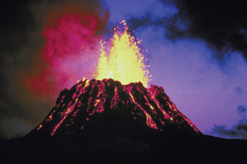

Module 1—Chemical Foundations
 Explore
Explore
Changes in Matter and Energy
Throughout your study of chemistry, you have used the particle theory, which is an explanation of the properties of matter being composed of tiny particles. In this lesson you will explore physical, chemical, and nuclear changes and use your knowledge of the particle theory to discuss their similarities and differences.
Physical Changes
 Try This
Try This
Use the Internet to locate information about the particle theory. How does this theory explain the different states in which matter can exist? In terms of the particles involved, how are the molecules of H2O in ice, water, and steam different? How are these particles the same? Summarize your answers in a chart.
phase change: a change of a substance from one physical state to another
A change from a solid to a liquid, a liquid to a gas, or a solid to a gas is a phase change.
endothermic process: a change in matter that requires an input of energy to occur
exothermic process: a change in matter that releases energy when it occurs
As you learned from your comparison of the arrangement of particles in the different states of matter, the change from one state to another (phase change) does not involve the breaking of chemical bonds. During a phase change, no new substances are formed. There is just a rearrangement of the particles involved. In order to cause such a rearrangement, energy is used. Energy is required to change the level of motion of the particles to such an extent that they can overcome forces between other particles. In Module 2 you will learn more about intermolecular bonds within a substance and their effects on physical properties of matter. These effects may include melting and boiling temperatures. Compared with other changes in matter, phase changes involve relatively small amounts of energy.
The table lists the equations involved in the phase changes of one mole of water and the energy associated with those changes. When energy is absorbed (endothermic process), it is written on the left-hand side of the equation (the reactant side). When energy is released (exothermic process), it is written on the right-hand side of the equation (the product side).
Phase change from solid to liquid: |
Phase change from liquid to solid: |
H2O(s) + 6.01 kJ → H2O(l) |
H2O(l) → H2O(s) + 6.01 kJ |
Phase change from liquid to gas: |
Phase change from gas to liquid: |
H2O(l) + 40.65 kJ → H2O(g) |
H2O(g) → H2O(l) + 40.65 kJ |
How do these reactions demonstrate that a change in matter does not affect the covalent bonds in the water molecule?
Try This
Observing Evidence of a Chemical Change—Volcano!
Volcano Dough

© 2007 Jupiterimages Corporation
In a large mixing bowl, combine 1.5 L (6 cups) of flour, 500 mL (2 cups) of salt, 60 mL (4 tablespoons) of cooking oil, and 500 mL (2 cups) of warm water.
Creating the Volcano
Place a small soft-drink bottle in the middle of a cookie sheet and use the volcano dough to build a volcano around the bottle. Be careful not to drop dough inside the bottle.
Eruption
-
Fill a 600-mL soft-drink bottle about three-quarters full with warm water.
-
Add some red food colouring to make the lava look real.
-
Add about 6 drops of dish soap to the soft-drink bottle to help the lava bubble.
-
Add 30 mL (2 tablespoons) of baking soda (not baking powder) to the solution in the soft-drink bottle.
-
Once you’re ready, add enough vinegar—approximately 100 mL—to start a vigorous reaction. Watch the eruption that follows!
When the reaction slows, you can add more vinegar to make the volcano erupt again. The volcano can be made to erupt several more times by adding more vinegar over the course of 15 to 20 minutes. The reaction taking place is between the baking soda and the vinegar, which produces carbon dioxide gas and increases the pressure in the bottle to cause the eruption. Have fun!